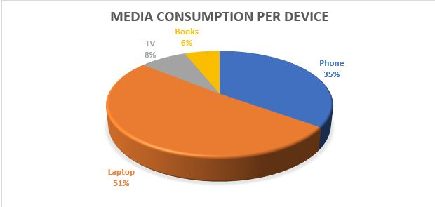

This week, I came across an opinion piece titled “The Moroccan Exception in the Arab World” by Yaëlle Azagury and Anouar Majid. This article focused on the revival and restoration of Morocco’s Jewish heritage through the policies of King Mohammed VI. The authors’ main argument is whether the revival is symbolic or an intentional endeavor by the country to revive its declining Jewish population. Given that the existing Jewish population in Morocco has dwindled from around 250,000 in the 1940s to around 2,400 citizens today, the authors feel that the symbolic aspect of these policies is more dominant.
What are the reasons for this drastic decline?
First, we need to acknowledge that this decline is prevalent in all the Arab countries in the Middle East and North Africa. This phenomenon was triggered and accelerated by the Arab-Israeli War of 1948. The aftermath of this war led to significant casualties on both sides, 700,000 Palestinian Arabs fled or were expelled by Israeli forces, and Israel annexed 22% more than the UN Partition Plan had allocated. The strategic losses incurred by the Arab countries involved in the war, the growth of nationalism among Arab nations, and the establishment of Israel as a Jewish state and a homeland for Jewish people were all factors that contributed one way or another to the Jewish exodus from Arab countries.
It is hard to estimate the exact numbers of Arab Jewish
citizens who have fled their respective countries, but it is estimated that
around one million Jews in North Africa and the Middle East left their homes in
the decade after the creation of Israel.
I used several data sources, including the data published by the Israeli Ministry of Foreign Affairs to create a visual that gives a better perspective of the exodus of the Arab Jewish citizens between 1948 up until 2005.
The most significant decline in the Jewish population took place between 1948 and 1967. The Six-Day Arab-Israeli War of 1967 was another trigger that made it almost impossible for Arab Jewish citizens to openly identify their religion due to the growing hostility against Israel. Many Arab states utilized their nationalistic agendas to represent the Jewish Arab population as a population that is more loyal to the Israeli Jewish homeland than to their respective countries. Policies were drafted to alienate and isolate the Arab Jewish population. These policies varied across the different Arab states, but they included: imposing specific restrictions on Jewish businesses and associations, limiting religious practices, subjecting the majority of the population to procedural harassment and continuous surveillance.
These circumstances may help us understand the significant decline of the Jewish population in Arab states. Many Arab Jews were also attracted by the prospects of living in a Jewish state that embraces their Jewish identity.
What happened beyond 1967?
The decline between 1948 and 1967 was so severe that the subsequent exodus of many Arab Jews beyond this period may be considered trivial. It has also become extremely hard to identify the Arab Jewish citizens who are still living in Arab countries due to the lack of public census data that identifies them. The remaining Jewish citizens are also less comfortable in publicly identifying their religion due to fear of harassment from both public and state actors.
I fact-checked a piece on The Blaze reporting on CNN being awarded the Walter Cronkite Award for Excellence in Television Political Journalism on their town hall event titled “The Students of Stoneman Douglas Demand Action.” See my bounce annotations.
In the past twenty years, there has been a significant rise in the number of students following the homeschooling model all over the United States (Gould, 2011). This growth has fueled the debate about the pros and cons of the homeschooling model and how it compares to the traditional schooling model. These debates are often emotionally charged due to the strong beliefs of the proponents of each side. Many researchers attribute the growth of the current “homeschooling movement” to various reasons including the deterioration of the public schooling system, moral and religious beliefs that oppose the traditional schooling model, and the parents’ beliefs that homeschooling nurtures their children’s ability to achieve a prosperous future (Cogan, 2010). This week, I had an opportunity to interview Edward (Ned) Burnell who is a proud product of both systems. Burnell, a current Ph.D. student at MIT’s Department of Mechanical Engineering, attributes part of his success in academia to his upbringing in a homeschooling system.
AM: Can you tell
me more about your typical day when you were homeschooled?
EB: My parents
prepared a daily schedule for me and my sister that was divided based on the
subject. They would choose a workbook that matches a particular subject and
then ask us to go through it and complete some exercises. We were also allowed
to play a fair number of educational computer games that were mainly focused on
math and grammar. The important approach that my parents followed was giving us
the relative flexibility to decide what we wanted to learn and when to learn
it. For example, if we were provided with a workbook that was not interesting
to us, we would skip it and choose a different one. My sister (who is three
years younger) was mostly using the same workbooks and games I was using so
there was no grade level in the traditional sense.
AM: Why do you
think some parents choose to homeschool compared to the traditional schooling
model?
EB: I believe
that there are three camps of homeschooling the Christian fundamentalist, the
camp that is morally opposed to the structure of the traditional schooling
model and believe that their children deserve better, and the camp that wants
to spend more time honing their children’s skills and knowledge so that they
can thrive in the real world.
AM: How did you
spend your summers during your homeschooling years?
EB: I generally
spent my summers hanging out with friends in my neighborhood. My mother would
also motivate me to draft a research paper every summer. This was not a
structured research paper in the academic sense, but it offered me the
opportunity to research a topic I’m interested in and visit the library in
search of answers to my research questions. A highpoint in middle school was
emailing a researcher on the Bubonic plague and getting a response about an
argument in his research paper that I did not understand.
AM: In what ways
do you think your homeschooling experience helped you during your transition to
the traditional public high school system?
EB: I remember in
high school, it was relatively easy for me to explain content to other students
as I was very comfortable explaining things to myself; this has been a valuable
survival skill. Also, the time I spent during my homeschooling learning about
diverse topics and nurturing different skills helped me during my high school
years.
AM: Did you face
any challenges transitioning from the homeschooling to the traditional model?
EB: I think
discipline was something I had to learn. For example, I never learned to write
about something I didn’t care about. I had to learn that in high school and
college. I was very confident. If I had something to say, I said it. This was
really challenging when I was forced to write about a topic that I wasn’t
interested in.
I was also never pushed to challenge myself in ways that I
didn’t want to, and I was never punished by an external source or by myself for
failure to overcome a certain challenge. Another challenge was sometimes
suffering from social anxiety, especially during my first year.
AM: Do you feel
that your upbringing in a homeschooling model helped you garner your current
passion for using design to improve human experiences?
EB: I think the freedom offered to me within the homeschooling environment helped me learn how to experiment with objects and think about answers to questions that are interesting to me. When I grew up, I realized that those experiences had supported how I handled design challenges and made me more comfortable in experimenting with unconventional methods.
Source: Medium
AM: Having had
the chance to learn through both models, what do you think are the benefits of
the traditional schooling model compared to the homeschooling model?
EB: I think the
traditional schooling model offers children more opportunities for developing
their social skills. It also makes them more comfortable adhering to the
traditional rules of schooling academia which may support their success within
the system. Traditional schooling is also essential for parents who have jobs
and cannot afford to homeschool.
AM: What do you
think are the main challenges of the traditional schooling and the
homeschooling models?
EB: I think that
the traditional schooling model has several challenges. First, schools force
students to fit into certain archetypes and molds, and this limits children’s
creativity and freedom to express themselves. I also think the “factory model
school” may force children to learn certain topics without spending time
understanding them and applying them. People often think of school, as unpaid labor.
We have these kids perform for us certain tasks; these tasks are called
“Homework,” even the name is problematic. The school helps students prepare
reports that will never be used which is a preparation for a white-collar
lifestyle.
As for the homeschooling system, I think that the difficulty
with homeschooling is that takes it a lot of time and attention from the
parent, it might be hard to homeschool if you have to pay rent and have jobs.
So, I believe it is circumstantial. The parents’ presence for a significant
portion of a child’s day may also impact the children’s interest in their
parents’ experiences since by time parents have fewer stories and experiences
to share due to their constant presence in their children’s lives.
Homeschooling may also make it hard for students to follow
the traditional academic system and to follow its rules as they were not
exposed to it from a younger age. For example, it was hard for me to get used
to the taking exams, but I was lucky enough that I had a photographic memory
that helped me achieve high scores with less effort.
When I asked Ned about the system he would choose for his
children, he mentioned that he might be more inclined towards a traditional
system that has some of the merits of the homeschooling system such as freedom
of expression and the ability of children to learn by performing activities and
tasks that they are interested in. It was fascinating to get to learn more
about Ned’s experience when Ned asked me about the schooling system I would prefer;
I found myself struggling to make a choice. I guess it is hard to choose an
educational system that might significantly influence the future of another
individual!
References
Cogan, M. F. (2010).
Exploring Academic Outcomes of Homeschooled Students. Journal of College Admission, 208, 18-25.
Martin-Chang, S., Gould, O.
N., & Meuse, R. E. (2011). The impact of schooling on academic achievement:
Evidence from homeschooled and traditionally schooled students. Canadian Journal of
Behavioural Science/Revue canadienne des sciences du comportement, 43(3), 195.
CAMBRIDGE, MA— The Institute of Politics at Harvard Kennedy School hosted Robert F. Kennedy, Jr. for a lecture titled “The Environmental Activism, American Economy, and Democracy.” Kennedy, the President of the Waterkeeper Alliance and one of the most prominent environmental attorneys in the US gave an impassioned lecture on the importance of protecting the environment as a means to achieve economic prosperity and protect ideals of democracy.
Kennedy started with the story of how he began his career as an environmental attorney by working with the fishermen communities living along the Hudson River. After many members of the community grew tired of the government indifference regarding the pollution caused by corporates along the river during the 1980s, Kennedy worked with other lawyers to galvanize these communities to protect their fishing resources by pursuing a legal solution. Kennedy and his team brought several lawsuits against New York City and several corporates including Consolidated Edison, and General Electric. According to Kennedy, the success of his team in winning several major lawsuits, and their ability to close all the major factories contaminating the Hudson River had a significant impact on saving the Hudson River and in helping them establish the Riverkeeper non- profit environmental group.
As stories about their success started to gain traction, several
communities facing similar water contamination challenges started reaching out
to Kennedy and his team to find solutions to their contaminated water sources.
As a result, Kennedy founded the Waterkeeper Alliance, a non-profit
environmental group that aims to protect rivers all over the US and around the
world. According to Kennedy, the Waterkeeper Alliance is now the fastest
growing water protection agency in the world, with three hundred- and
five-member organizations.
Economic prosperity
vs. Environmental policy
Kennedy argued that it is wrong to think that environmental
policy prohibits economic prosperity. “An investment in our environment is an
investment in our infrastructure, in our assets. These assets such as water can
help us achieve sustainable economic prosperity” Kennedy added. Kennedy believes that “The free market can be
used as a tool to solve all of our environmental problems if used in the right
way.” Kennedy believes that a free market system functioning in the right way
should punish pollution and promote efficiency. “If the cost of pollution is added
to the bills of the companies, they would find ways to pursue more
environment-friendly strategies. The problem is that those companies do not pay
the cost of their pollution, and at the end, poor communities
disproportionately shoulder the cost.”
Free marketers, not
environmental lawyers
The perception of the community towards environmental
lawyers is another aspect that Kennedy believes needs to change. Kennedy sees
his role as a “free marketer who helps improve the efficiency of the free
market capitalism and protects democracy.” According to Kennedy, because
democracy, the environment, and the economy are so intertwined, he believes his
role encompasses working on solutions that address all these fields together in
a way that supports the prospects of future generations.
Robert F.Kennedy Jr. during his lecture
The media’s role in
supporting our environment
In his opinion about the role of the media in promoting
environment-friendly policies and highlighting the atrocities of polluting
companies, Kennedy added “Unfortunately, most of our legal cases and
environmental campaigns do not get covered by the media except if they have a
direct impact on Wallstreet” Kennedy added. Kennedy believes that this is
because of the huge amount of money being poured by many polluting corporations
to control media coverage. Kennedy asserted his belief that of these
corporations, pharmaceutical companies currently “own the press.” “Currently
news shows air around 24 ads per show, 17 of these ads are for pharmaceutical
companies. These companies control the content, and they are doing so
unapologetically. Just look at Anderson Cooper’s show, it proudly mentions that
it is brought to you by Pfizer.”
The legacy for future
generations
Kennedy believes that the fight for protecting our environment is “a fight for leaving a legacy for our children and future generations. They should not have to live in a miserable environment because we were selfish and were only thinking about making short term gain.” According to Kennedy, “We are facing a critical moment in time. The current president is anti-environment policy and is currently working on a bill that would kill the Clean Water Act. Not only that, but we also have the most anti-environment Supreme court in history. Kavanaugh’s mother clearly showed her position during her time as a prosecutor, and Neil Gorsuch’s mother reign as the Environmental Protection Agency administrator was filled with scandals.”
Kennedy concluded his speech with a call to action. “All
these challenges should drive us to organize and act to protect our
environment. We need more grass-roots organizations to work together to support
our environment and the future of our planet.”
For me, this exercise was a wake-up call. I’ve always thought that I was a moderate consumer of media, and that is why realizing that I spent around 8 hours per day consuming media this week was a revelation. The diagram below shows my consumption per media outlet. I spent a significant portion of my time (3 hours per day) using Microsoft Outlook, which is the application I use for work. This diagram made me realize the amount of time I spend sending and receiving emails. I also noted the number of times (12 times per day) I used the Outlook app on my phone to check if I have received any new email. Social Media is another outlet that takes a significant portion of my time. This observation can be attributed to the fact that most of my family and friends live abroad, so social media offers me the best method to connect with them and know their news. The other observation I noted was that I only spent 10 minutes per day on articles that I’ve opened through Facebook and Twitter. I honestly excepted this number to be higher.
Consumption per media outlet per day
I was also surprised to realize that 51% of my media consumption was done through my laptop. I think it might be because during my work day I sometimes take some mental breaks by reading some news and entertainment articles. I also sometimes use my laptop for viewing videos which might have attributed to my consumption pattern.

Another revelation for me was the significant number of mediums I consumed that are being tracked third-party data-tracking applications. By using “Ghostery” a web extension which allowed me to monitor and block these applications, I realized that third parties are tracking 45% of the media I consume. I have created the sculpture below to express my feelings regarding being continuously tracked by third party providers and by the media outlets I consume online. In the middle, there is the eye of the user being monitored by different digital eyes (representing the tracking of information) that are surrounding the user from everywhere, designed to make the user feel that the experience is as natural as possible so that the trackers can continue to mine data.
Overall, this exercise was eye-opening for me, and it allowed me to notice specific patterns in my consumption that I did not expect. It also prompted me to reconsider the way I consume media.
The meteoric rise of the field of Artificial Intelligence (AI) has had a
remarkable influence on various aspects of our lives, and this influence is
only expected to rise. AI has already disrupted the field of journalism with
the introduction of “Algorithmic journalism” (Dorr,2015). Algorithmic
journalism involves a “software that automatically produces texts in
natural language from structured data.” Various economic reasons are
driving the rise of AI within journalism. First, AI spares journalists the time
to draft articles and news pieces that are relatively uniform such as daily
news reports about the performance of the stock market. AI’s use in editorial
tech helps writers and journalists review their pieces promptly. There’s also
an argument that AI may help reduce the biases in certain stories, but given
that the algorithms drafting the content may itself include the biases of the
person who coded them, this argument still has its flaws.
In its bid to enhance its ability to reap the fruits of AI in journalism,
Reuters has introduced an AI tool called Lynx Insight (Kobie, 2018). This tool
aims to augment journalists and writers rather than replace them by providing
them with analytical tools that synthesize big data in a way that nurtures
their journalistic role. Lynx Insight will analyze a vast amount of data to
identify any interesting patterns or topics that can allow Reuters the
opportunity to publish content that is innovative and pioneering, and at the
same time fits with the readers’ interests. Lynx Insight aggregates the data
and sends the journalist a message with a brief about any interesting patterns
with some background about the story or topic. The App associated with the tool
provides journalists with a live feed of updates regarding any possible
breaking news stories.
AI’s growing influence in the field of journalism may have significant
implications on the future of news and media. AI may help journalists
personalize the news according to the interests of their audience, which may
enhance the appeal of the news and its readability. Its ability to reduce the
cost may allow new news and media outlets to enter the field which supports the
democratization of the field and may provide a competition that can support the
quality of the content. Unfortunately, this competition may also lead to the
deterioration of the content with news outlets fixated on competition and
monetizing content rather than nurturing the field and improving its appeal.
Over-dependence on AI tools such as Lynx Insight may reduce the journalist’s
sense of agency and innovation ability. This dependence may be destructive to
the field of journalism if there are issues with the algorithm, or if the data
used by AI has significant flaws.
Kobie, N. (2018, March 10). Reuters is taking a big gamble on AI-supported
journalism. Retrieved February 12, 2019, from
https://www.wired.co.uk/article/reuters-artificial-intelligence-journalism-newsroom-ai-lynx-insight
Seth, C. (2016). Mapping the human–machine divide in journalism. The
SAGE handbook of digital journalism, 341.
I work at the Harvard Graduate School of Education as an Associate Director for Professional Education and as a Teaching Fellow. I am responsible for managing and developing professional education programs and strategies for K-12 teachers, with a special focus on international audience. I also lead the Middle East Professional Learning Initiative, which is an initiative that aims to support teacher educators and system-level leaders in developing practices, programs, and structures to help improve student opportunities to learn and achieve productive sustainable lives.
My research focuses on civic education, using informal learning to support education in low-income communities and teacher professional development. I earned my Master’s degree in Education in 2017 at HGSE.
I am from Egypt and I actively participated in the Arab Spring which was the highlight of my experience with the impact of participatory media in politics. The Arab Spring also influenced my decision to co-found Mashroo3 Kheir (The Good Deed Project) NGO that focuses on promoting civic education among youth in Egypt.
I’m really excited to join the course and learn from everyone’s diverse experiences.


 The meteoric rise of the field of Artificial Intelligence (AI) has had a
remarkable influence on various aspects of our lives, and this influence is
only expected to rise. AI has already disrupted the field of journalism with
the introduction of “Algorithmic journalism” (Dorr,2015). Algorithmic
journalism involves a “software that automatically produces texts in
natural language from structured data.” Various economic reasons are
driving the rise of AI within journalism. First, AI spares journalists the time
to draft articles and news pieces that are relatively uniform such as daily
news reports about the performance of the stock market. AI’s use in editorial
tech helps writers and journalists review their pieces promptly. There’s also
an argument that AI may help reduce the biases in certain stories, but given
that the algorithms drafting the content may itself include the biases of the
person who coded them, this argument still has its flaws.
In its bid to enhance its ability to reap the fruits of AI in journalism,
Reuters has introduced an AI tool called Lynx Insight (Kobie, 2018). This tool
aims to augment journalists and writers rather than replace them by providing
them with analytical tools that synthesize big data in a way that nurtures
their journalistic role. Lynx Insight will analyze a vast amount of data to
identify any interesting patterns or topics that can allow Reuters the
opportunity to publish content that is innovative and pioneering, and at the
same time fits with the readers’ interests. Lynx Insight aggregates the data
and sends the journalist a message with a brief about any interesting patterns
with some background about the story or topic. The App associated with the tool
provides journalists with a live feed of updates regarding any possible
breaking news stories.
AI’s growing influence in the field of journalism may have significant
implications on the future of news and media. AI may help journalists
personalize the news according to the interests of their audience, which may
enhance the appeal of the news and its readability. Its ability to reduce the
cost may allow new news and media outlets to enter the field which supports the
democratization of the field and may provide a competition that can support the
quality of the content. Unfortunately, this competition may also lead to the
deterioration of the content with news outlets fixated on competition and
monetizing content rather than nurturing the field and improving its appeal.
Over-dependence on AI tools such as Lynx Insight may reduce the journalist’s
sense of agency and innovation ability. This dependence may be destructive to
the field of journalism if there are issues with the algorithm, or if the data
used by AI has significant flaws.
Kobie, N. (2018, March 10). Reuters is taking a big gamble on AI-supported
journalism. Retrieved February 12, 2019, from
https://www.wired.co.uk/article/reuters-artificial-intelligence-journalism-newsroom-ai-lynx-insight
Seth, C. (2016). Mapping the human–machine divide in journalism. The
SAGE handbook of digital journalism, 341.
The meteoric rise of the field of Artificial Intelligence (AI) has had a
remarkable influence on various aspects of our lives, and this influence is
only expected to rise. AI has already disrupted the field of journalism with
the introduction of “Algorithmic journalism” (Dorr,2015). Algorithmic
journalism involves a “software that automatically produces texts in
natural language from structured data.” Various economic reasons are
driving the rise of AI within journalism. First, AI spares journalists the time
to draft articles and news pieces that are relatively uniform such as daily
news reports about the performance of the stock market. AI’s use in editorial
tech helps writers and journalists review their pieces promptly. There’s also
an argument that AI may help reduce the biases in certain stories, but given
that the algorithms drafting the content may itself include the biases of the
person who coded them, this argument still has its flaws.
In its bid to enhance its ability to reap the fruits of AI in journalism,
Reuters has introduced an AI tool called Lynx Insight (Kobie, 2018). This tool
aims to augment journalists and writers rather than replace them by providing
them with analytical tools that synthesize big data in a way that nurtures
their journalistic role. Lynx Insight will analyze a vast amount of data to
identify any interesting patterns or topics that can allow Reuters the
opportunity to publish content that is innovative and pioneering, and at the
same time fits with the readers’ interests. Lynx Insight aggregates the data
and sends the journalist a message with a brief about any interesting patterns
with some background about the story or topic. The App associated with the tool
provides journalists with a live feed of updates regarding any possible
breaking news stories.
AI’s growing influence in the field of journalism may have significant
implications on the future of news and media. AI may help journalists
personalize the news according to the interests of their audience, which may
enhance the appeal of the news and its readability. Its ability to reduce the
cost may allow new news and media outlets to enter the field which supports the
democratization of the field and may provide a competition that can support the
quality of the content. Unfortunately, this competition may also lead to the
deterioration of the content with news outlets fixated on competition and
monetizing content rather than nurturing the field and improving its appeal.
Over-dependence on AI tools such as Lynx Insight may reduce the journalist’s
sense of agency and innovation ability. This dependence may be destructive to
the field of journalism if there are issues with the algorithm, or if the data
used by AI has significant flaws.
Kobie, N. (2018, March 10). Reuters is taking a big gamble on AI-supported
journalism. Retrieved February 12, 2019, from
https://www.wired.co.uk/article/reuters-artificial-intelligence-journalism-newsroom-ai-lynx-insight
Seth, C. (2016). Mapping the human–machine divide in journalism. The
SAGE handbook of digital journalism, 341.